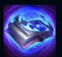
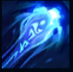
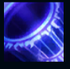
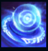
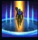

Ryze
| Ryze The Rune Mage | |
|---|---|
| Release date | 21.02.2009 |
| Class | Battlemage |
| Positions | Middle |
| Resource | mana |
| Range type | Ranged |
| Adaptive type | Magic |
| Base statistics | |||
| Health | 560 – 2022 | Resource | N/A |
| Health regen. | 7.5 –15.55 |
Mana regen. | 8-25 |
| Armor | 33 – 99.75 | Attack damage | 64 – 115 |
| Magic resist. | 32 – 53.25 | Crit. damage | 175% |
| Move. speed | 340 | Attack range | 550 |
Considerat de mulți drept unul dintre cei mai puternici vrăjitori din Runeterra, Ryze este un arhimag străvechi, dur și încercat, ce poartă pe umeri o povară imensă. Înzestrat cu o putere ocultă fără egal și o constituție nepământească, Ryze cutreieră lumea în căutarea runelor care au format-o, fragmente de magie pură ce au creat Runeterra din nimic. E conștient de ororile pe care le pot dezlănțui aceste artefacte asupra Runeterrei și trebuie să le recupereze înainte să ajungă pe mâini greșite. |  |
MĂIESTRIE OCULTĂ Vrăjile lui Ryze provoacă daune suplimentare în funcție de mana bonus, iar mana lui maximă crește cu un procent în funcție de puterea abilităților |
||
|---|---|---|---|---|
 |
SUPRAÎNCĂRCARE Pasiv, celelalte abilități de bază ale lui Ryze resetează timpul de reactivare al ''Supraîncărcării'' și încarcă o rună. Când Ryze folosește ''Supraîncărcarea'' având încărcate 2 rune, primește un bonus scurt la viteza de mișcare. La folosire, Ryze aruncă o încărcătură de energie pură în linie dreaptă, provocându-i daune primului inamic lovit. Dacă ținta are efectul ''Flux'', ''Supraîncărcarea'' provoacă daune suplimentare și ricoșează la alți inamici din apropiere afectați de ''Flux'' | |||
 |
ÎNCHISOAREA RUNELOR Ryze prinde ținta într-o cușcă de rune, provocându-i daune și încetinind-o. Dacă ținta are efectul ''Flux'', este țintuită. |
|||
|  |
FLUX DE VRAJĂ Ryze lansează o sferă de putere magică pură care îi provoacă daune unui inamic și le aplică debuff-uri tuturor inamicilor din apropiere. Vrăjile lui Ryze au efecte suplimentare împotriva inamicilor afectați de debuff. |
|||
 |
SFERĂ DE TELEPORTARE Pasiv, ''Supraîncărcarea'' provoacă și mai multe daune împotriva țintelor cu efectul ''Flux''. La folosire, Ryze creează un portal către o locație din apropiere. După câteva secunde, aliații de lângă portal sunt teleportați în locația-țintă. |